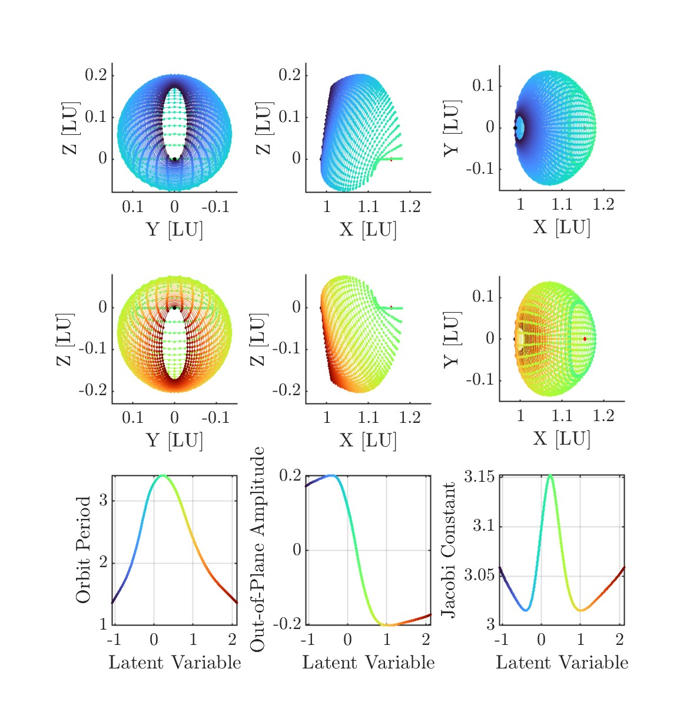
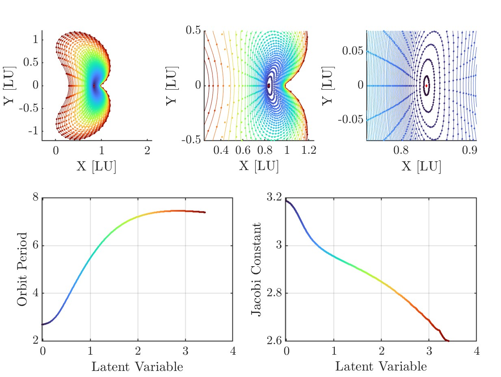
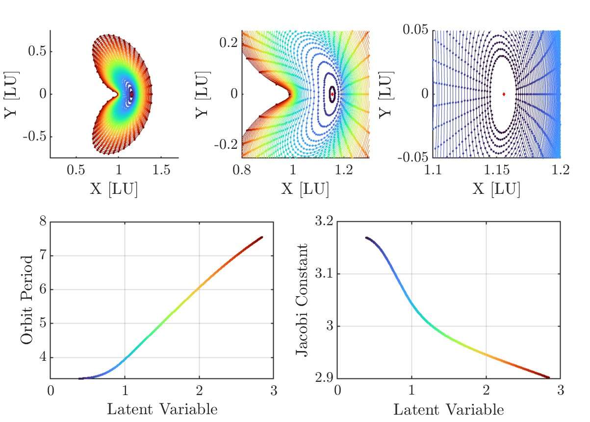
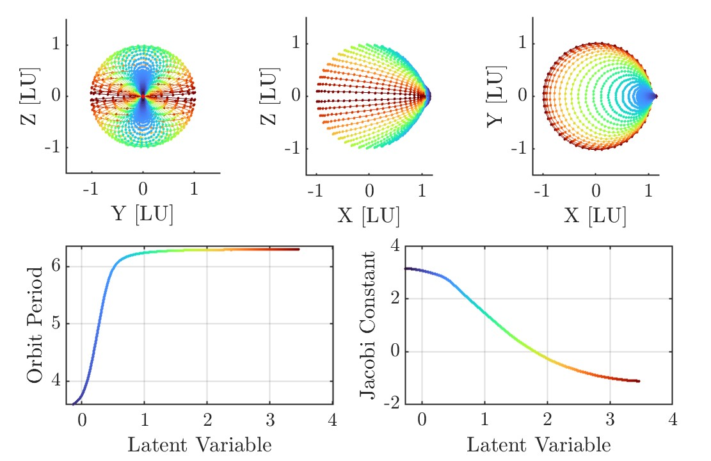
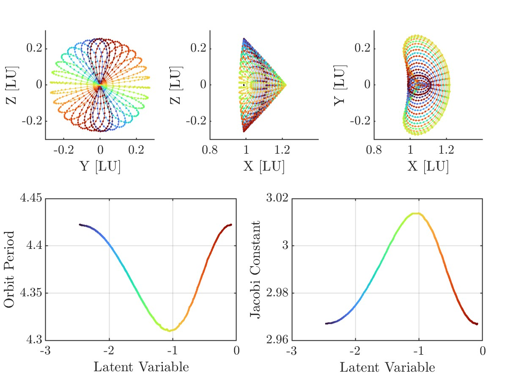

CU Boulder · CSML · JGCD 2026
Autoencoder Neural Networks for Representations of Periodic Orbit Families
This runs the trained multi-family decoder (1 → 102 → 2601 → 307) in your browser. Drag the window or its edges; each curve is the raw, uncorrected decoder output for one value of c, limited to the latent range of the 6,537 training orbits.
The idea
Periodic orbits in the Earth–Moon three-body problem come in continuous families, but they are usually stored as discrete tables of initial conditions. We train an autoencoder to compress an entire orbit (51 states equally spaced in time, plus the period) into one number, c. The decoder then works as a continuous map from c to an initial guess for multiple shooting:
A continuous database
One scalar picks out a unique orbit. The latent is monotonic along the family, which the period and Jacobi constant are not.
Fully correctable
Every decoded test orbit converges to a true periodic orbit, with a median of 3–4 Newton iterations.
Across bifurcations
A single network spans the L2 Halo, Lyapunov, Axial, and Vertical families, as in the demo above.
Pipeline
Generate families
Continue a JPL seed orbit with pseudo-arclength continuation until a bifurcation or lunar impact.
Build training vectors
Phase each orbit to start at apolune, sample 51 nodes in time, correct with multiple shooting, and flatten to 307 numbers.
Train
A symmetric MLP with a 1-D bottleneck, trained with Adam on MSE(states) + λT·MSE(T).
Decode & correct
Decode midpoints between training latents and correct them with variable-period multiple shooting.
Results
Models were trained on five single families and on the multi-family path. Test orbits lie between training samples, so every result is an interpolation in latent space.
| Family | Training orbits | ‖F(V)‖ initial | Newton steps | ΔT |
|---|---|---|---|---|
| L1 Lyapunov | 5,855 | 1.6e-3 | 3 | 1.4e-3 |
| L2 Lyapunov | 4,330 | 1.6e-3 | 3.6 | 3.2e-3 |
| L2 Halo | 6,052 | 1.5e-3 | 4 | 8.5e-4 |
| L2 Vertical | 7,012 | 1.4e-3 | 3 | 4.9e-4 |
| L2 Axial | 1,550 | 2.5e-3 | 4 | 2.1e-4 |
| Multi-family (demo) | 6,537 | 1.4e-3 | 3 | 5.6e-4 |
Medians over the test set, averaged over five trainings. Nondimensional units.





Citation
Published in the Journal of Guidance, Control, and Dynamics. An earlier version was presented at the 2025 AAS/AIAA Astrodynamics Specialist Conference.
@article{clark2026autoencoder,
title = {Autoencoder Neural Networks for Representations of Periodic Orbit Families},
author = {Clark, Thomas H. and Scheeres, Daniel J.},
journal = {Journal of Guidance, Control, and Dynamics},
year = {2026},
doi = {10.2514/1.G009889}
}